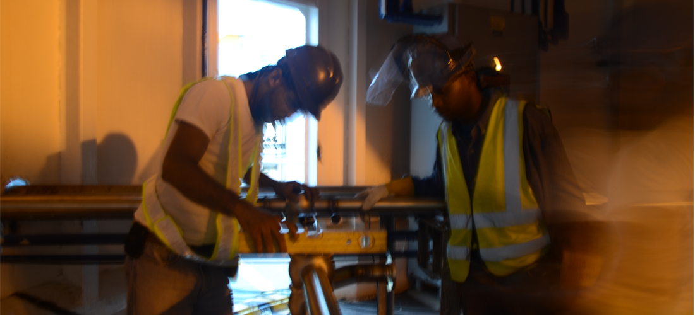

STOIC is a full service provider consisting of Engineers, Architects and Skilled Craftsmen whose business model focuses on Engineering, Design and Installation Services for the Process, Manufacturing and Utility industries. Our focus includes mechanical systems,Process & Utility Piping, light gauge manufacturing and project planning and execution for the industrial and process sectors. Our company is based in the Dominican Republic with a market reach that includes the Caribbean and Central America.
We focus on the following Core Businesses:
Engineering and Design for Industrial, Process and Utility markets.
Light gauge manufacturing with a concentrated effort on small to medium size tanks, modules, panels, and ladders and platforms.
Installation Services for our End User Customer.
Installation services for Original Equipment Manufacturers.
Project Planning, Management and Administration.